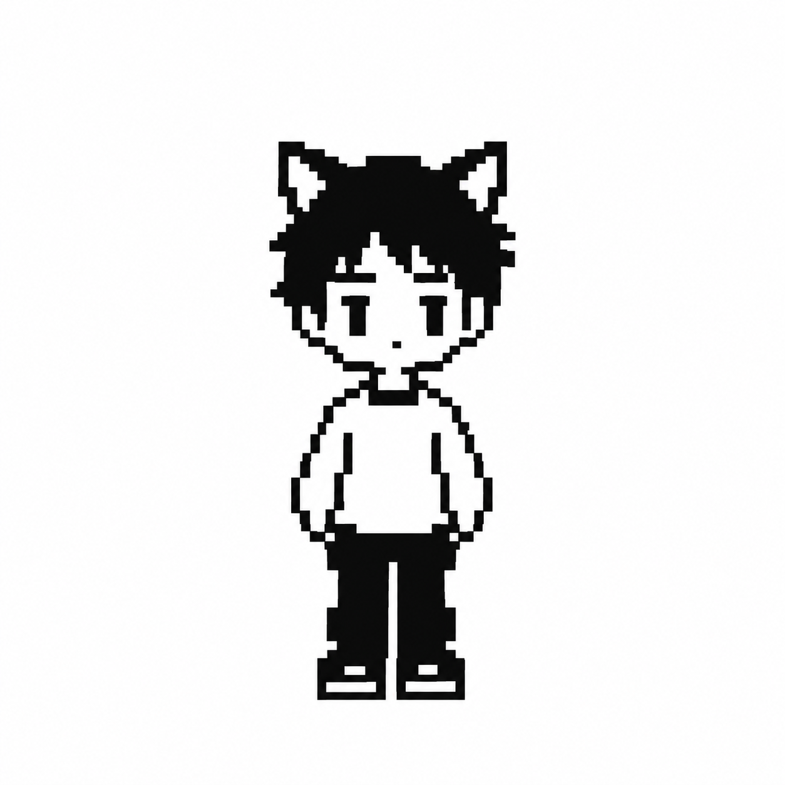

Andrés Raúl Ruarte
Estudiante de Artes Multimediales y explorador visual. Mi curiosidad se mueve entre el universo sonoro, el mundo audiovisual y la lente de mi cámara. Siempre busco salir de la zona de confort y experimentar con nuevos medios para contar historias. Date una vuelta por mi Instagram: @melianiski.